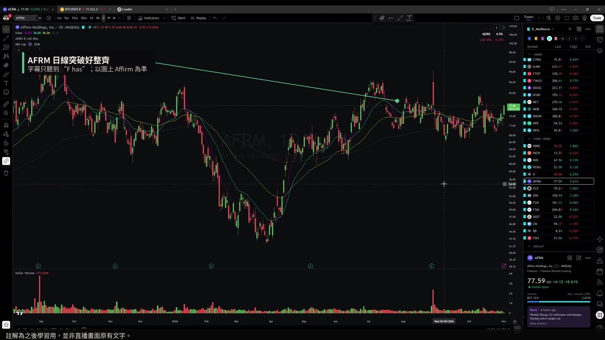
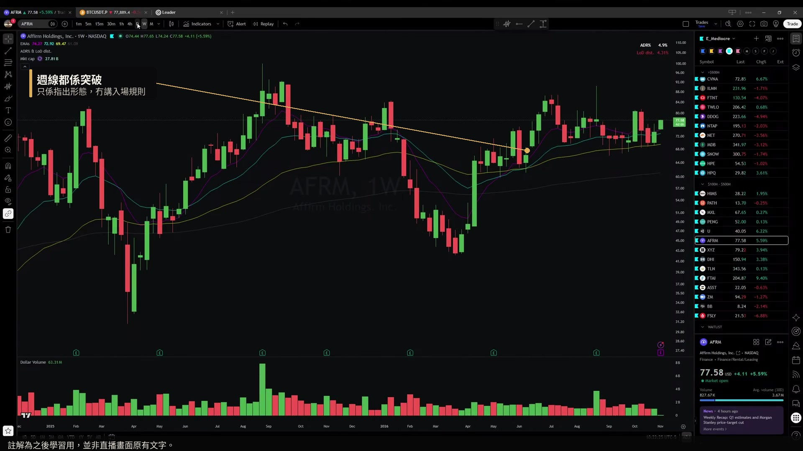

概要
今日有一隻突破好整齊
2:10:27 佢話呢隻今日突破好整齊，日線同週線都係。字幕只聽到 “F has a really clean breakout today”，畫面代碼係 AFRM（Affirm Holdings），不是 Ford。只係指出形態，冇講點入場。
圖一
AFRM 日線突破好整齊
直播 2:10:32

原話
AFRM has a really clean breakout today. Both the daily and weekly.
AFRM 今日突破好整齊。日線同週線都係。
YouTube 寫 “F has a really clean breakout today”。畫面係 AFRM（Affirm Holdings）。
點樣讀
只係指出突破整齊，冇講入場、止蝕或者目標。唔好當成推薦。
圖二
週線都係突破
直播 2:10:45

原話
Both the daily and weekly.
日線同週線都係。
點樣讀
週線用來確認「兩個周期都整齊」，仍然冇附加規則。
附註
注意事項
- 字幕把 AFRM 聽成 “F has”。本站按畫面更正，不是 Ford。